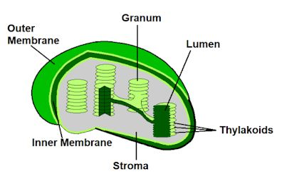

🌿 Plastids
Plant cell organelles responsible for photosynthesis, storage and pigmentation.
Introduction
Plastids are double membrane-bound cell organelles found only in plant cells and some algae. They contain pigments or store food materials. Plastids are absent in animal cells.
Like mitochondria, plastids possess their own DNA and ribosomes, allowing them to divide independently. They are therefore considered semi-autonomous organelles.
Types of Plastids
1. Chloroplast
Chloroplasts are green plastids containing the pigment chlorophyll. They capture sunlight and prepare food by the process of photosynthesis. Chloroplasts are therefore known as the kitchens of plant cells.
2. Chromoplast
Chromoplasts contain coloured pigments such as yellow, orange and red. They give colour to flowers, fruits and some roots, helping attract insects and animals for pollination and seed dispersal.
3. Leucoplast
Leucoplasts are colourless plastids that store food materials such as starch, oils and proteins. They are commonly found in roots, seeds and underground stems.
Functions of Plastids
- Carry out photosynthesis.
- Store starch, oils and proteins.
- Provide colour to fruits and flowers.
- Help in food production and storage.
- Contain their own DNA and ribosomes.
📌 Key Points
- Plastids are double membrane-bound organelles found only in plant cells and algae.
- They contain their own DNA and ribosomes.
- There are three main types of plastids: Chloroplasts, Chromoplasts and Leucoplasts.
- Chloroplasts contain chlorophyll and perform photosynthesis.
- Chromoplasts provide colour, while Leucoplasts store food materials.
📝 Remember
Chloroplast = Green = Photosynthesis
Chromoplast = Colour
Leucoplast = Storage
🎯 JKBOSE Exam Point
The following questions are frequently asked in JKBOSE examinations:
- What are plastids?
- Name the three types of plastids.
- Write the functions of chloroplasts.
- Differentiate between chloroplast, chromoplast and leucoplast.
- Why are chloroplasts called the kitchen of the cell?
- Why are plastids called semi-autonomous organelles?

Figure 1.12 — Types of plastids: Chloroplast, Chromoplast and Leucoplast.
❓ Practice Questions
- What are plastids?
- Name the three types of plastids.
- Write the functions of chloroplasts.
- Differentiate between chloroplast, chromoplast and leucoplast.
- Why are chloroplasts called the kitchen of the cell?
- What substances are stored by leucoplasts?